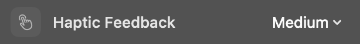
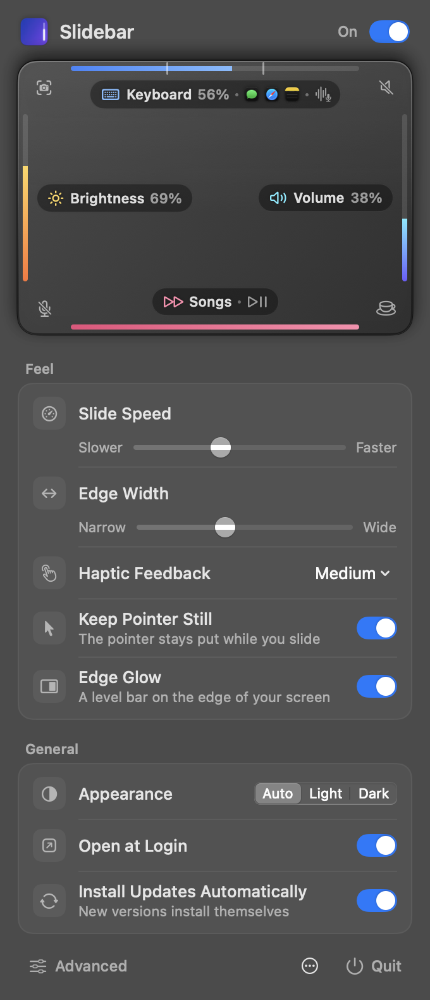
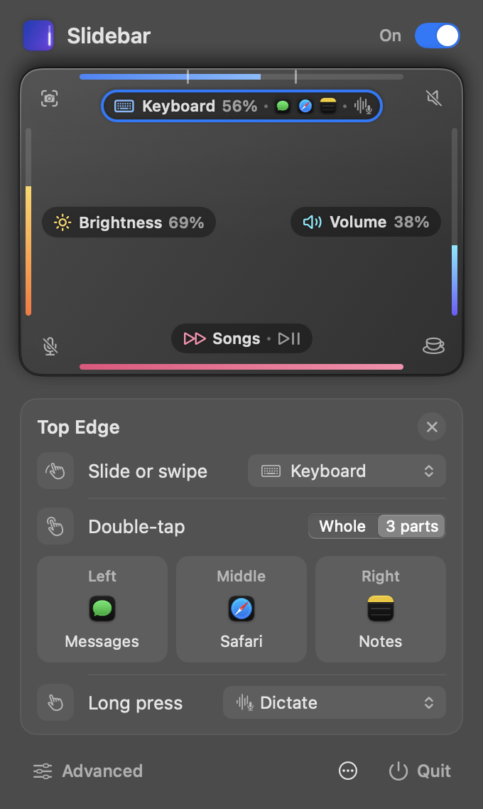
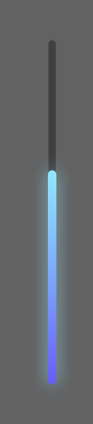
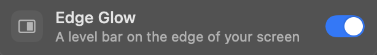
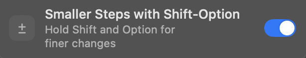
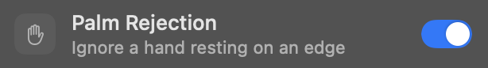
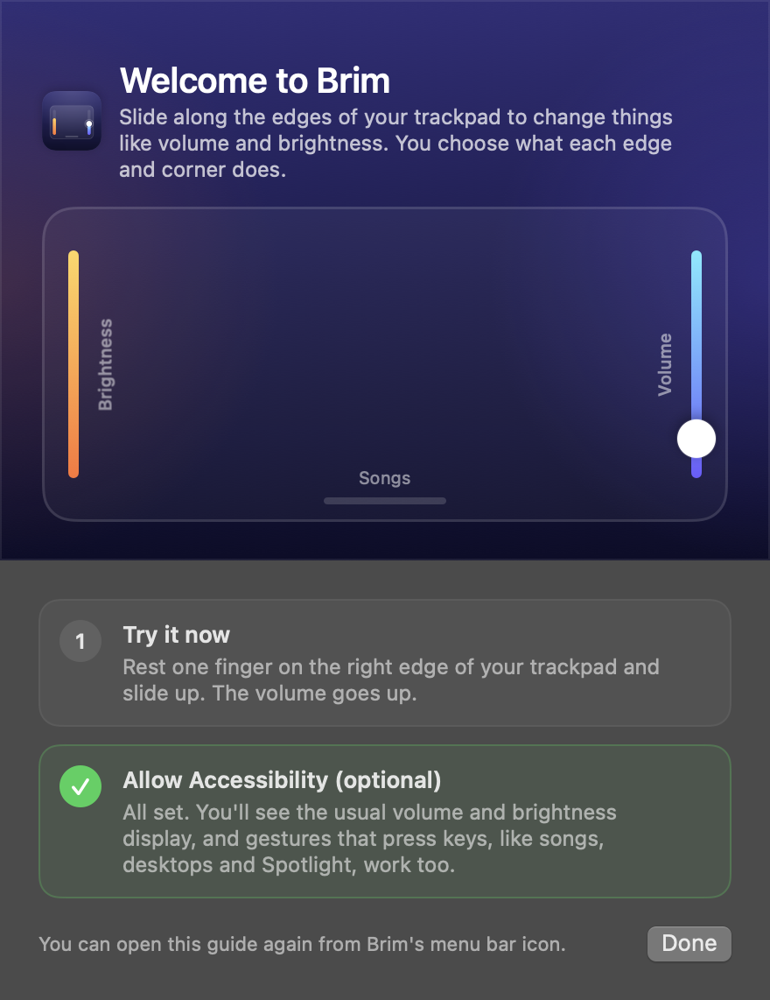

A tick for every step
The trackpad taps back at each step, with a firmer bump at the top and the bottom of the range.
Choose Light, Medium or Strong, or turn it off.
Slidebar is a free Mac menu bar app. Slide one finger up the right edge for volume, or the left edge for brightness.
Slidebar runs on a Mac. Open this page there to download it, or .
Swipe the bottom edge to skip a song, double-tap the top-right corner to mute. Hold Shift Option for smaller steps.

Click an edge or a corner on the trackpad in Slidebar’s menu and pick what it does. Edges slide or swipe. Any edge or corner can also answer a double-tap: open an app from the top edge, play or pause from the bottom. Split an edge into three parts and each third gets its own. Or hold a finger still on it to dictate, and lift to stop.
Edges can slide brightness, volume, the keyboard backlight, microphone volume or Night Shift warmth, step through browser tabs or undo history, or swipe to skip songs and switch windows. A double-tap or a long press, on any edge or corner, can mute the sound or your microphone, play or pause, skip songs, start dictation, keep your Mac awake, lock the screen, turn off the display, take a screenshot, open Spotlight or Emoji & Symbols, run a Shortcut or open an app.

Keyboard light, three apps and dictationSlide to change the keyboard backlight. The edge is split in three, so a double-tap on the left, middle or right opens Messages, Safari or Notes. Hold a finger still on it to dictate, and lift to stop.
Each edge moves in 16 steps, like the keys on your keyboard, and every step answers under your finger.

The trackpad taps back at each step, with a firmer bump at the top and the bottom of the range.
Choose Light, Medium or Strong, or turn it off.
Volume and brightness show the same on-screen display as your keyboard keys.
This needs the optional Accessibility permission. Without it, the levels still change.


Edge Glow lights a slim bar on the matching edge of your display while you slide, so you see the level without looking for it.
Slide in the demo at the top of this page and watch the edge of this window.
While you slide, the pointer doesn’t move, so you never lose your place in a document.

Hold Shift and Option while you slide to move in quarter steps, the same as with the keyboard.

Only a deliberate slide that starts on an edge does anything. A resting palm is caught and its change put back.
Touches that start mid-trackpad, and anything while you type or hold the button, are ignored.
Slidebar.dmg comes straight from the project’s releases on GitHub.
Its icon appears in the menu bar at the top right of your screen. Slidebar doesn’t add a Dock icon.
Slidebar isn’t notarized by Apple, so the first time, macOS says it can’t check it for malicious software. Open System Settings, go to Privacy & Security, scroll down and click Open Anyway. You do this once.
The volume goes up. When you’re ready, allow Accessibility to get the on-screen display and the gestures that press keys.
Something else? Ask on GitHub.
Install Slidebar, then slide one finger up or down along the right edge of your trackpad for volume, or along the left edge for brightness. Both move in the same 16 steps as the keys on your keyboard. You can give every edge and corner a different job from Slidebar’s menu bar icon.
Yes. Slidebar is free and open source under the MIT License, and every feature is included. There are no accounts, ads or in-app purchases.
Yes. It works with the built-in trackpad of a MacBook and with Apple’s Magic Trackpad, on Apple silicon and Intel Macs running macOS 13 Ventura or later.
It’s optional. Without it, Slidebar still changes volume and brightness directly. Allowing Accessibility adds the usual on-screen volume and brightness display, and the gestures that press keys for you, like skipping songs, switching tabs and opening Spotlight. Slidebar doesn’t read your screen or what you type.
Slidebar isn’t notarized by Apple, so macOS shows this warning the first time you open it. Open System Settings, choose Privacy & Security, scroll down and click Open Anyway next to Slidebar. You only need to do this once. The source code is on GitHub if you’d like to read it or build the app yourself.
It only responds to a deliberate slide that starts on an edge. Touches that start in the middle of the trackpad are ignored, and so is anything while you type or hold the trackpad button down. If a resting palm moves a slider, Slidebar notices and puts the level back.
Double-tap a corner, or any edge on top of its slider, to mute the sound or your microphone, play or pause, skip songs, start dictation, keep your Mac awake, lock the screen, turn off the display, take a screenshot, open Spotlight or Emoji & Symbols, run one of your Shortcuts or open an app. Split an edge into three parts to give each third its own double-tap, and a long press can do any of the same things.
Yes. Set an edge or corner’s long press to Dictate in Slidebar’s menu. Rest one finger still there for half a second to start dictating into the app in front, and lift it to stop. It uses the app’s own Start Dictation command, so turn on Dictation in System Settings, Keyboard first, and allow Accessibility for Slidebar.
No. Touches are handled in memory on your Mac and never leave it. The only time Slidebar goes online is an optional check for updates, which asks for one small file and sends nothing about you.
Choose Quit in Slidebar’s menu, then drag Slidebar from your Applications folder to the Trash. If you allowed Accessibility, you can also remove Slidebar from the list in System Settings, Privacy & Security, Accessibility.
Slidebar is MIT-licensed and needs no account. It works on your Mac, and only goes online to check for updates, which you can turn off.
